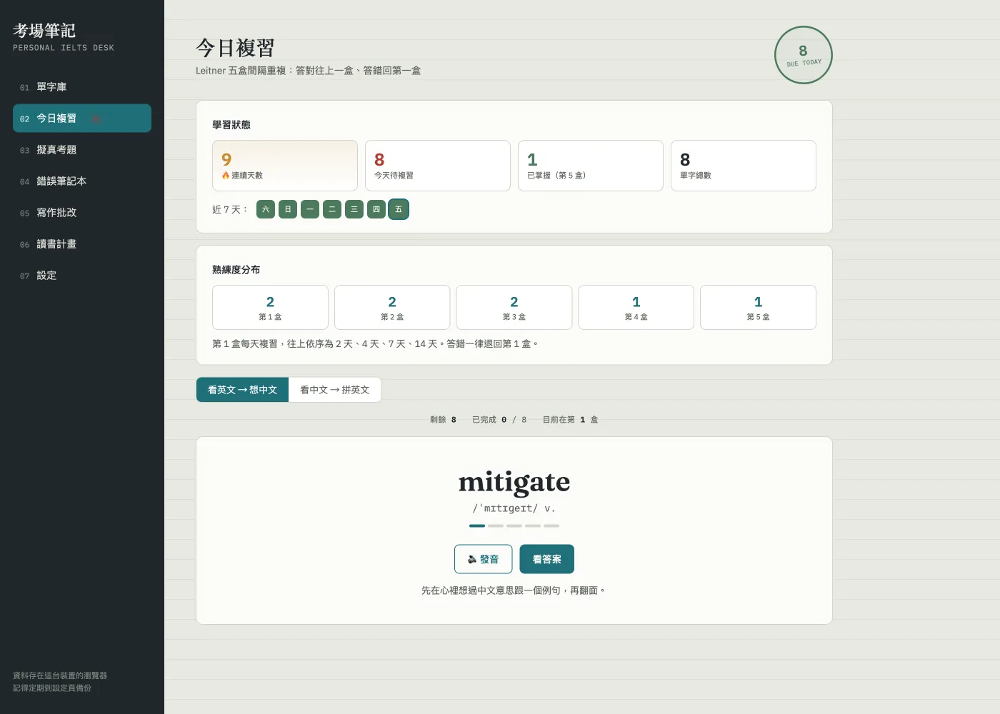

Cloudflare Pages · Gemini · Web Speech
Personal IELTS Desk
A Traditional Chinese IELTS study desk. Vocabulary, Leitner review, AI mock questions, mistake notebook, writing feedback and daily planning, all in the browser.

Read case notes
- Problem
- Existing IELTS tools cost money, require an account, and keep your data.
- Approach
- Everything runs in the browser. The API key lives in localStorage, data exports as JSON, and cloud sync is optional.
- Trade-off
- Gemini is called from the browser with no backend. Server cost is zero; users bring their own key. The review algorithm is Leitner rather than SM-2, because you can see which box you're in.
- Learned
- Dynamic model discovery outlasts hardcoded model names. I also wrote a handoff package for Claude Code, so later iterations don't start from zero.